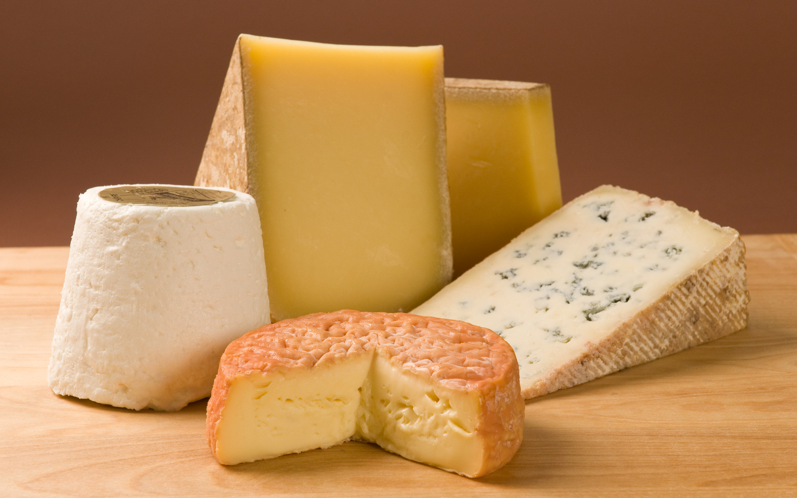

Что такое сыр ?


" Книга о сыре. "
А также из других источников Интернет
Уважаемый Читатель - после ознакомления с Книгой
рекомендую Вам заказать ее бумажное издание.
В книге рассказано о пищевой ценности и вкусовых свойствах сыра, о рациональном использовании его в нашем питании, о сырах, вырабатываемых в нашей стране и за рубежом, о тайнах сыроделия и историиего с античных времен и до наших дней.
Книга предназначена для массового читателя.
Сыр — один из немногих продуктов широкого потребления, содержащих в большом количестве такие необходимые для жизни вещества, как белки, жиры, минеральные соли, витамины, икроэлементы.
Разнообразен ассортимент сыров, богата их вкусовая гамма.
У сыра есть своя история и своя география. Многообразны традиции производства и потребления сыра.
Сыр имеет свою науку. Ученые все глубже проникают в тайны сыроделия, познают новые свойства сыра, создают его новые разновидности.
Сыр имеет, наконец, и свою кулинарию. Искусные повара и хозяйки способны доводить ее до совершенства, используя прекрасные свойства этого продукта.
Обо всем, что связано с сыром, рассказывает эта книга.
P.S. Примечание автора Сайта : Хотя Книга написана в советские времена и в "советском стиле" и с многочисленной хвалебностью
- это многогранное и добросовестное исследование о Сыре.
Рекомендую к прочтению , если игнорировать "совковую" составляющую - то это очень даже познавательный и интересный материал ...
- Слово к читателю.
- Из далекого прошлого.
- Сыр сегодня.
- Сыр в нашей стране.
- Сыр и здоровье.
- О том, что когда-то было секретом.
- На выставке сыров.
- Какик признаки главные?.
- Твердые сыры.
- Швейцарский и им подобные сыры.
- Сыры типа голландского и костромского.
- Сыры российский и чеддер.
- Сыры острые типа латвийского.
- Мягкие сыры.
- Пикантные сыры.
- Мягкие сыры с молочным вкусом.
- Свежие мягкие сыры.
- Рассольные сыры.
- Оригинальные национальные сыры.
- Плавленые сыры.
- Ломтевые сыры.
- Колбасные копченые сыры.
- Пастообразные сыры.
- Сладкие сыры.
- Консервные сыры.
- Сыры к обеду.
- Справочник потребителя сыров.
- Сыр в разных странах.
- Коронованные сыры.
- Со времен древнего Рима.
- Как альпийский эдельвейс.
- Тюльпаны, сыры ….
- Четыре переплетенные трубы.
- Гордость кабачка «Старый колокол».
- К пиву — не только сосиски ….
- Скандинавы предложили свои сыры.
- Брынза — главный сыр.
- И в сыре — перец и горчица.
- Сыр голубой с берегов Карибского моря.
- Сыр и фляки.
- Сыр с мамалыгой.
- Золотой сыр.
- Много кухонь, и в каждой сыр.
- Сыр в овечьей шкуре.
- Индийский панир.
- От прилавка с сыром до сырного стола.
- Сыры и Вина.
- Блюда из сыра и с сыром.
- Примечания.